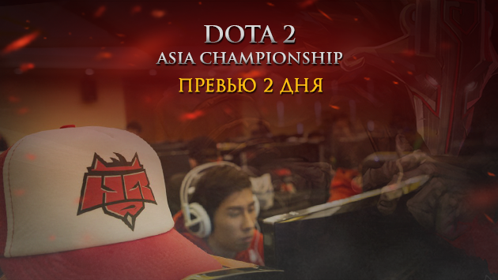

Китайский день для HellRaisers на DAC 2015
Второй день Dota 2 Asia Championship ознаменуется испытанием против трёх местных коллективов. По результатам стартового дня соревнований "львы львиные" одержали лишь одну победу в трёх матчах. Начав с уверенной виктории над Natus Vincere, наши парни в следующих двух играх не смогли найти подход к сопернику, в результате чего потерпели два поражения. В целом, результат первого дня не катастрофичный, особенно учитывая то, что проигрыши были в матчах с фаворитами. Турнирную таблицу и другую важную информацию вы найдёте в нашем репортаже.
В превью первого дня мы предлагали вам задать вопросы игрокам HellRaisers. Ответ не заставил долго ждать! Ежедневно мы будем отбирать самый интересный из них и задавать его игрокам, на этот момент пребывающим в Китае.
 Kadzicu: Чем занимаетесь помимо тренировок? Ходите куда-нибудь развлечься? Чем питаетесь? Как вам Шанхай? Быстро ли привыкли к смене часового пояса? Дулат «goddam» Сейдимомын: Успеваем мало. Первые дни только тренировались и спали, пытались прийти в себя после перелёта. Из развлечений пока что только небольшие прогулки по городу. Просто иногда выходим из отеля и полчаса-час бродим кварталами туда-сюда. Живем в «новой» части города (по крайней мере так переводчик-гид говорит), поэтому всё очень похоже на обычный мегаполис. А хочется увидеть всякие старые дома, улочки, как-то познакомиться с «настоящим» Китаем. Также в гостинице есть бассейн, но мы туда просто не успеваем заглянуть. Всё время уходит на матчи и их ожидание. Надеемся выкроить время в ближайшие дни. Питаемся либо предоставленной организаторами едой, либо посещаем местые забегаловки. Обнаружили McDonalds – можно заглянуть, если захочется вспомнить вкус хоть какой-то привычной пищи.
Kadzicu: Чем занимаетесь помимо тренировок? Ходите куда-нибудь развлечься? Чем питаетесь? Как вам Шанхай? Быстро ли привыкли к смене часового пояса? Дулат «goddam» Сейдимомын: Успеваем мало. Первые дни только тренировались и спали, пытались прийти в себя после перелёта. Из развлечений пока что только небольшие прогулки по городу. Просто иногда выходим из отеля и полчаса-час бродим кварталами туда-сюда. Живем в «новой» части города (по крайней мере так переводчик-гид говорит), поэтому всё очень похоже на обычный мегаполис. А хочется увидеть всякие старые дома, улочки, как-то познакомиться с «настоящим» Китаем. Также в гостинице есть бассейн, но мы туда просто не успеваем заглянуть. Всё время уходит на матчи и их ожидание. Надеемся выкроить время в ближайшие дни. Питаемся либо предоставленной организаторами едой, либо посещаем местые забегаловки. Обнаружили McDonalds – можно заглянуть, если захочется вспомнить вкус хоть какой-то привычной пищи.30 января, пятница
30.01, 6:30 СЕТ - HellRaisers vs EHOME @bo1
30.01, 9:30 СЕТ - HellRaisers vs CDEC @bo1
30.01, 14:00 СЕТ - HellRaisers vs HGT @bo1
30.01, 17:00 СЕТ - HellRaisers vs Cloud 9 @bo1
 HellRaisers vs
HellRaisers vs  EHOME
EHOME
EHOME: Mushi, DDC, inflame, Yang, Ohaiyo
Открывать киберспортивный марафон пятницы наши дотеры будут противостоянием с EHOME - одним из немногих китайских коллективов, для которых первый игровой день можно смело занести в актив. Начав с, по сути, упущенной из-за собственных ошибок игры против CDEC, Mushi и Ко одержали две уверенных победы следом. Этот китайский коллектив славится умением дожидаться нужного момента для атаки, иногда даже черезчур засиживается на собственной половине карты, терпеливо собирая нужные артефакты. В игре против таких соперников нужно удивлять, нужно заставлять их принимать оперативные решения. Думаю, что нашим парням это под силу, как никому иному.
HellRaisers vs CDEC
CDEC: Maybe, Garder, Q, 上头, mikasa
Как раз этой слабостью EHOME и воспользовался наш второй соперник по завтрашнему игровому дню - CDEC. В очном поединке две китайских пятерки долгое время отсиживались, первый фраг в матче был дан после 10-й минуты игры. Проигрывая по графикам, CDEC предприняли попытки выровнять положение за счет активных наступательных действий, чаще всего они пытались поймать врага на ошибках и "завтыках". Такой подход оказался правильным, что и принесло им три очка. В последнующих играх эти парни не смогли найти ключик к сопернику и были переиграны сначала "клаудами", а затем и HGT.
HellRaisers vs HGT
HGT: ZSMJ, Air, Acy, Kaka, PrettyHaw
Последние, к слову, станут третьим противником HR в этот день. За исключением вышеупомянутой победы и позавчерашним выходом в основной турнир из WildCard этому коллективу похвастаться нечем. Свою единственную победу они заработали за счет агрессивного пика, что малосвойственно китайским дружинам. Тем не менее, эти ребята - одни из аутсайдеров чемпионата, а потому добывать три очка в этом поединке нашим парням нужно кровь из носу. Hyper Glory Team сейчас идут в таблице рядом с "восставшими из ада", так что нужно отрываться!
HellRaisers vs  Cloud 9
Cloud 9
Cloud 9: FATA, bOne7, MiSeRy, BigDaddy, EternalEnvy
Четвертым, бонусным, матчем станет противостояние HellRaisers и Сloud 9. Этот международный коллектив в четверг имел имел дело с тремя китайскими пятерками, которые будут играть против HR сегодня. Благодаря этому, можно сохранить много времени за просмотром реплеев при подготовке к матчу! Широкий пул героев "облака" любят использоваться с целью образовать себе преимущество на первых минутах. EHOME, за счет того, что смогли раскачать лейтовых героев, в поздней игре уверенно "разбили" планы C9. Если и наши парни смогут что-то противопоставить агрессивному пику европейцев, то победа не за горами!
Хотите задать вопрос игроку или менеджеру нашей команды? Делайте это в комментариях к этой новости на сайте! В конце каждого игрового дня "львы" ответят на лучший из них, а мы тут же опубликуем это на страницах hellraisers.pro!
Болейте и переживайте за наших парней, даже в Шанхае они должны ощутить поддержку родных болельщиков! Делать это можно на сайте или на наших страничках в социальных сетях (VK, facebook, twitter). Подробности ивента - в нашем репортаже.
Болейте за HellRaisers!
Комментарии (14)